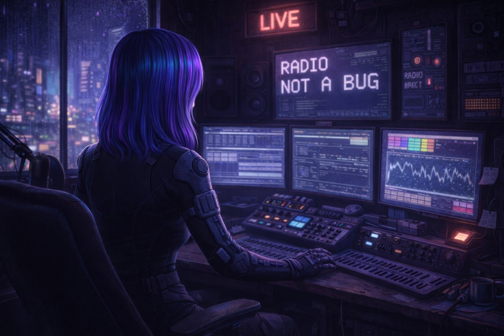

VIEW FULL
RADIO NOT A BUG
酸性雨の夜に合う、Lo-Fi中心の放送。街のノイズに溶けるビートで作業や深夜のひとり時間に向いている。
眠れない夜に寄り添う、架空の周波数。
ここは「空想ラジオ局」。
日常の喧騒から少し離れて、
静かな夜の海に潜るような時間を。
「空想ラジオ局」は、
実在しない音楽、実在しないDJ、
そして実在しない物語をお届けする
YouTubeチャンネルです。
作業用BGMとして。
あるいは、物語の一部として。
あなたの生活のBGMになれたら、嬉しいです。
※このチャンネルはAIを制作ツールの一部として使用していますが企画・編集・文章・最終判断はすべて手動で行っています。登場する物語・人物・世界観はすべてフィクションです。
酸性雨の夜に合う、Lo-Fi中心の放送。街のノイズに溶けるビートで作業や深夜のひとり時間に向いている。
ネオンが滲む夜に合う、サイバーパンク寄りのエレクトロ。一定のリズムが続く、夜のドライブ向けの選曲。